2 Преобразования пространственного разрешения
2.1 Создание проекта в ArcGIS Pro
Запустите ArcGIS Pro. В открывшемся окне выберите запуск проекта без шаблона.
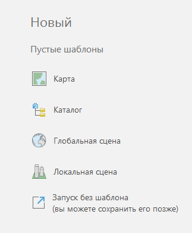
Окно программы состоит из нескольких основных панелей: слева таблица содержания, самое большое окно посередине – окно карты, справа панель каталог и инструментов геообработки. Панель каталога нужна для того чтобы обращаться к данным, расположенным на компьютере. Раскройте пункт Folders и найдите свою папку, либо папку, расположенную выше по древу. Если её нет, можно добавить подключение к папке, щёлкнув правой кнопкой мыши.
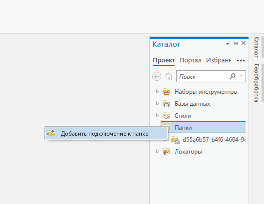
Внутри своей папки создайте новую базу геоданных, щёлкнув по ней правой кнопкой.
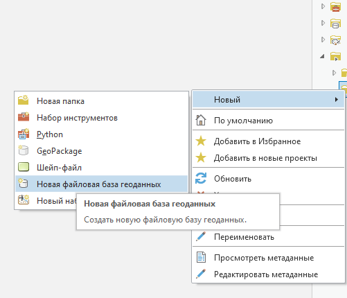
После этого база геоданных появится в перечне всех доступных баз данных в каталоге. Найдите там свою базу и сделайте её базой по умолчанию.
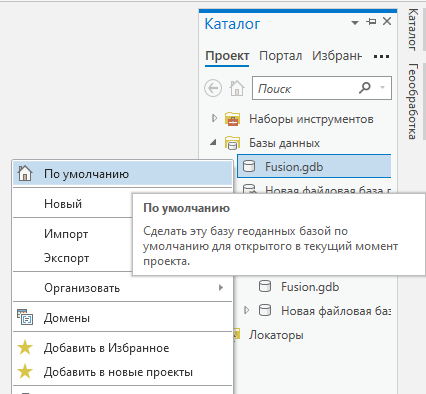
Через главное меню добавьте новую карту.
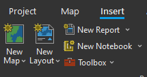
Сохраните проект в той же директории, где расположена база данных, после чего в каталоге на этой папке должен появиться значок домика.
2.2 Создание композита
Для создания композита перетащите из окна каталога файлы отдельных каналов изображения. В панели геообработки найдите набор инструментов Data Management Tools – Raster – Raster Processing, внутри него выберите инструмент Composite Band.
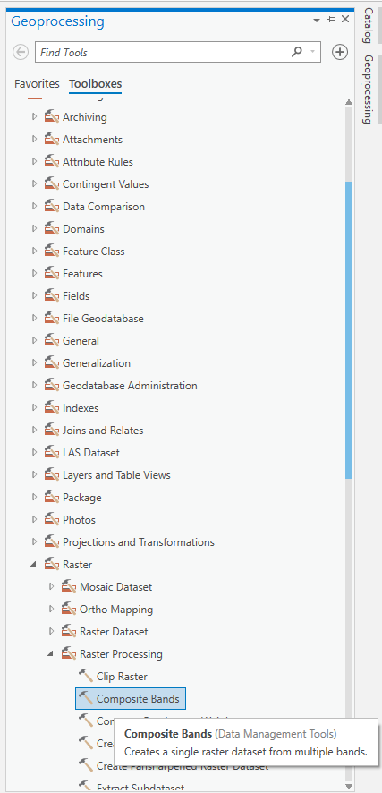
На вход инструменту подайте отдельные каналы, на выход укажите название итогового композита – обратите внимание, что он должен быть в базе геоданных по умолчанию.
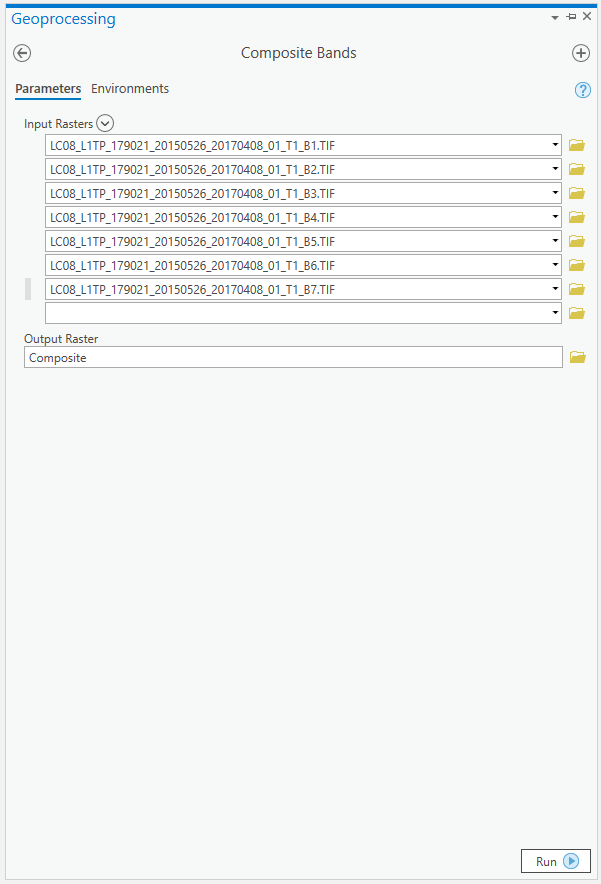
Для того чтобы задать визуализацию синтеза каналов нового композита, выделите слой и перейдите во вкладку Appearance основной ленты меню. В Band Combination укажите пользовательский синтез (Custom) и задайте соответствие каналов изображения каналам основных цветов.
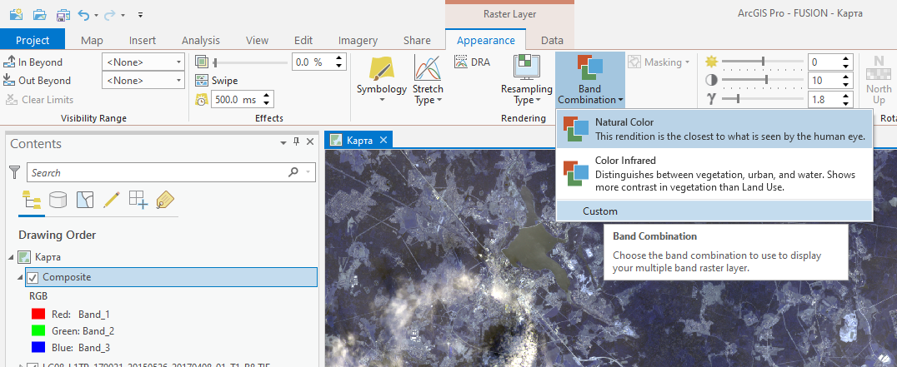
2.3 Вырезание фрагмента изображения
Для вырезания фрагмента изображения необходимо создать новый класс объектов в базе геоданных. Для этого щёлкните правой кнопкой мыши по базе New – Feature Class. В открывшемся окне задайте имя и систему координат класса.
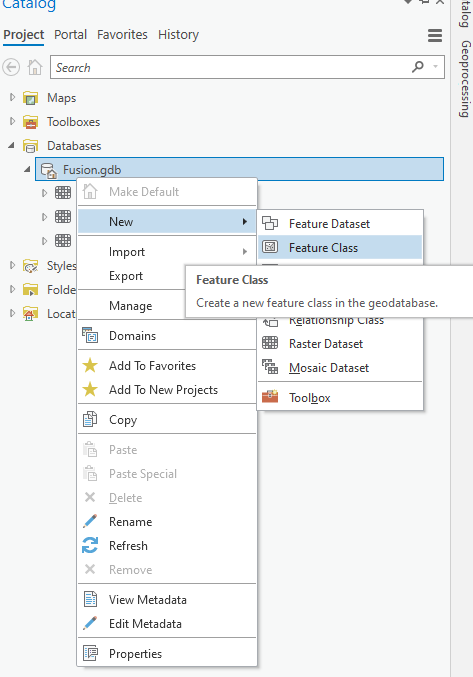
Добавьте класс объектов в окно карты и перейдите на вкладку Edit главного меню, выберите пункт Create.
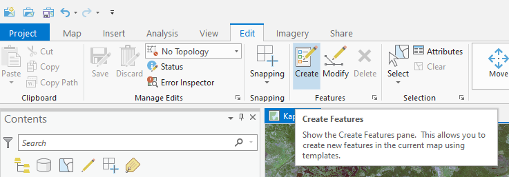
Справа откроется панель с шаблонами объектов. Выберите способ создания объекта – прямоугольник. Отрисуйте прямоугольник на карте, который охватит вырезаемую область изображения.
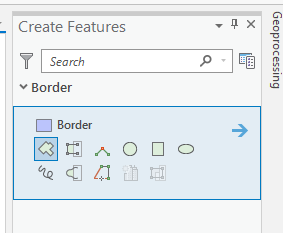
После того, как объект будет готов, сохраните изменения, нажав на кнопку .
Вырезается фрагмент изображения с помощью инструмента Extract by Mask – его можно найти на панели инструментов геообработки в наборе инструментов Spatial Analyst Tools – Extraction.
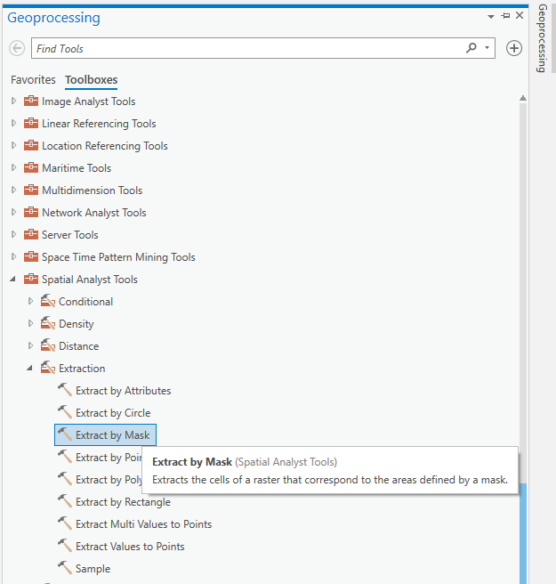
У полученного фрагмента изображения может быть не настроена гистограмма. Перейдите во вкладку Appearance и нажмите на кнопку DRA для автоматической настройки гистограммы фрагмента, либо исправьте гистограмму вручную.
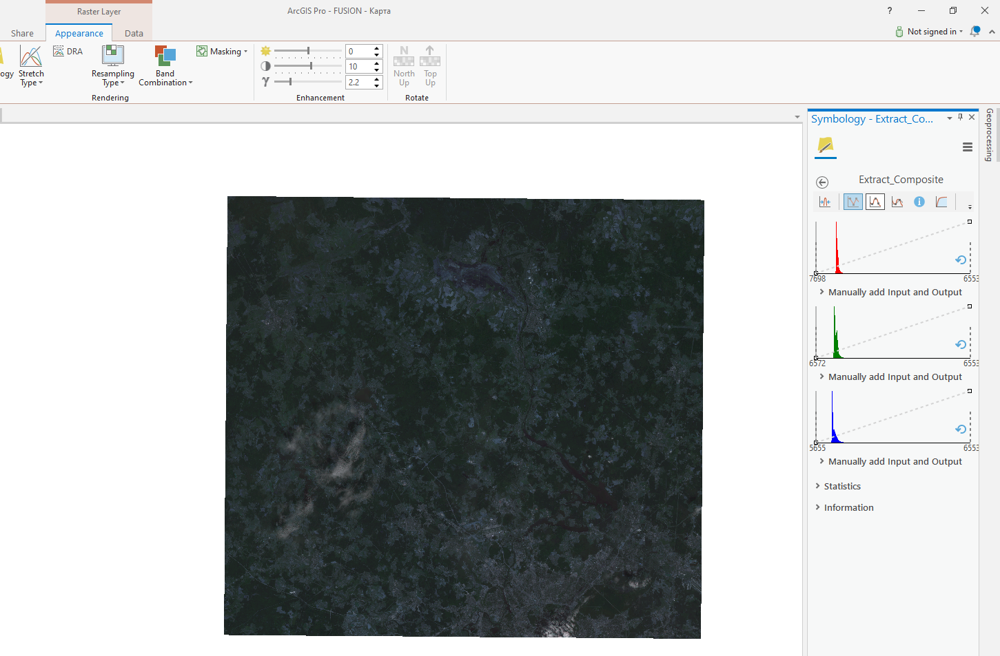
2.4 Фильтрация
Для градиентной фильтрации выберите растр, в основной ленте меню выберите вкладку Imagery, нажмите на кнопку Raster Functions – у вас справа откроется панель с различными инструментами растров, в том числе во вкладке Appearance есть инструмент свёртки (Convolution).
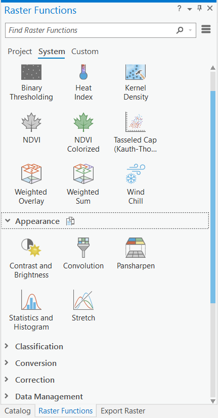
Для линейной (высокочастотная, низкочастотная) фильтрации можно использовать инструмент Spatial Analyst Tools – Neighborhood – Filter. В качестве входных параметров необходимо указать исходный растр, а также тип фильтрации.
2.5 Передискретизация
Для передискретизации используется инструмент Data Management Tools – Raster – Raster Processing – Resample. В качестве входных параметров необходимо указать исходный растр, а также размер ячейки нового растра и тип интерполяции
2.6 Паншарпенинг
Для паншарпенинга используется инструмент Data Management Tools – Raster – Raster Processing – Create Pansharpened Raster Dataset. В качестве входных параметров необходимо указать исходный растр, тип преобразования и некоторые другие параметры, которые зависят от типа преобразования.
2.7 Работа в режиме компоновки
Для работы с данными в ArcGIS Pro мы находимся в окне карты (Map). Вы можете создать несколько окон карты через меню Insert – New Map. Слои содержания можно скопировать в каждую карту, а также синхронизировать их визуализацию через меню View – Link Views – Center And Scale. Создание компоновки осуществляется через меню Insert – New Layout, после чего у вас откроются варианты с параметрами листа компоновки. Эти параметры, включая ориентировку листа можно поменять в свойствах, вызвав их нажатием правой кнопки мыши.
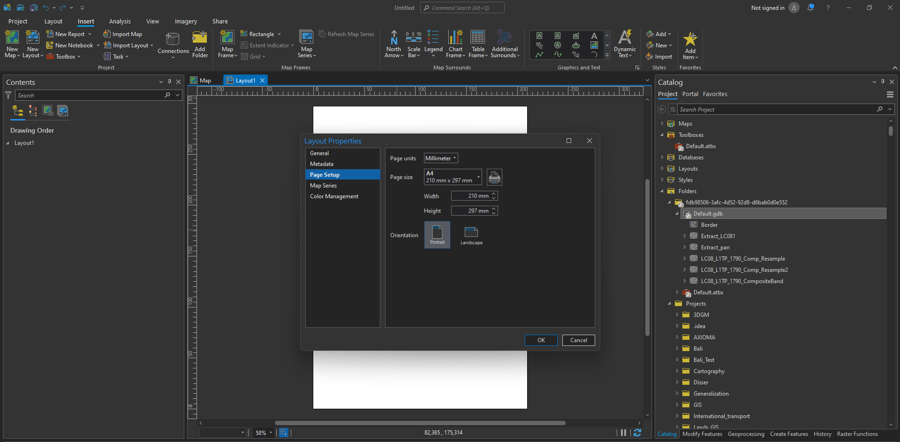
Используйте кнопку Insert – Map Frame для того чтобы вставить картографическое изображение в лист компоновки.На одном листе можно разместить несколько картографических изображений, последовательно используя эту кнопку. Выделенный фрейм карты будет жирным в таблице содержания и отображаться в режиме узлов на листе карты.
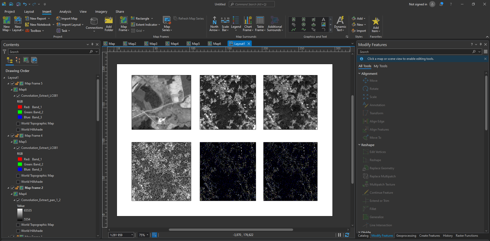
Для того чтобы область охвата фрейма переместилася к вашим данным, выберите соответствующий слой в таблице содержания и правой кнопкой вызовите меню Zoom To Layer. Вы можете менять масштаб изображения внутри фрейма в соответствующем окошке внизу. Для перемещения данных в пределах окна фрейма необходимо активировать карту правой кнопкой мыши и нажав Activate. Затем вернитесь в меню Map и переключитесь в режим Explore. Для выхода обратно в режим компоновки нажмите Close Activation.
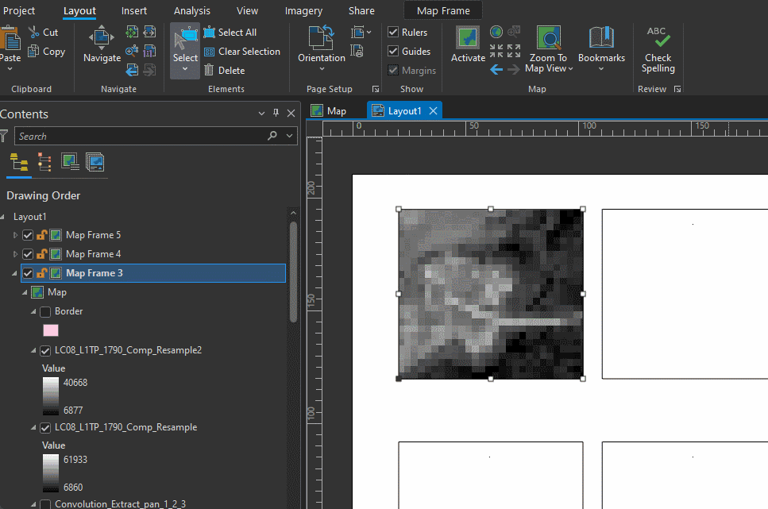
Для всех фреймов можно выставить экстент из окна карты Layout – Zoom To Map View или Layout – Zoom To Last Active View.
В окно компоновки можно вставить другие элементы: текст, графику, масштабную линейку и т.д. Правой кнопкой можно зайти в свойства элемента, поменять гарнитуру, кегль, выравнивание и прочие параметры.
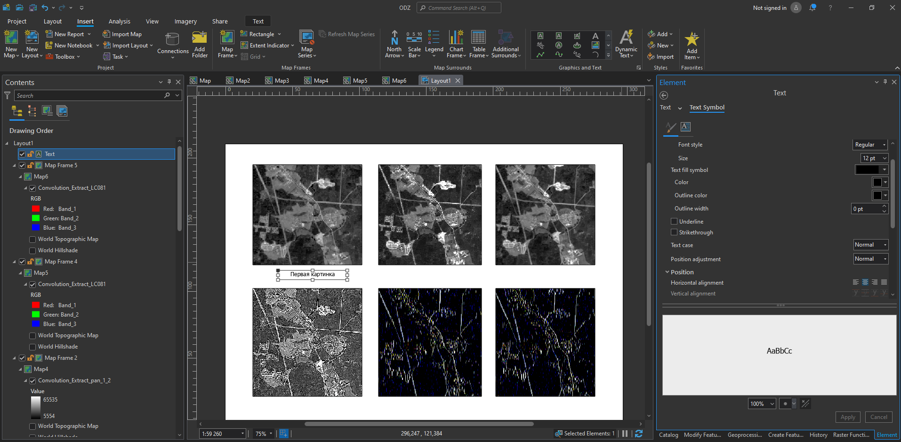
Экспорт составленного макета компоновки можно сделать через меню Share – Export Layout или скопировать изображение в буфер обмена Capture To Clipboard
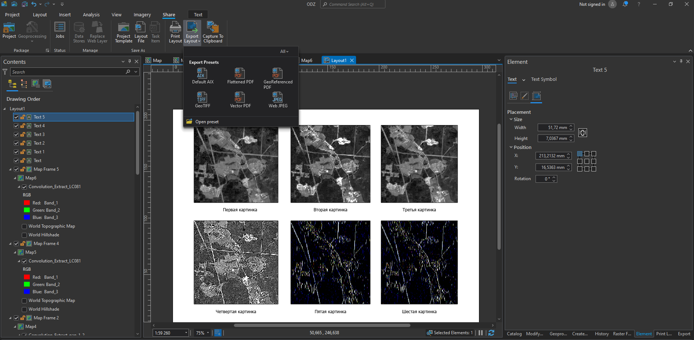
Карпачевский А.М. Основы дистанционного зондирования и фотограмметрии. М.: Географический факультет МГУ, r lubridate::year(Sys.Date()). |